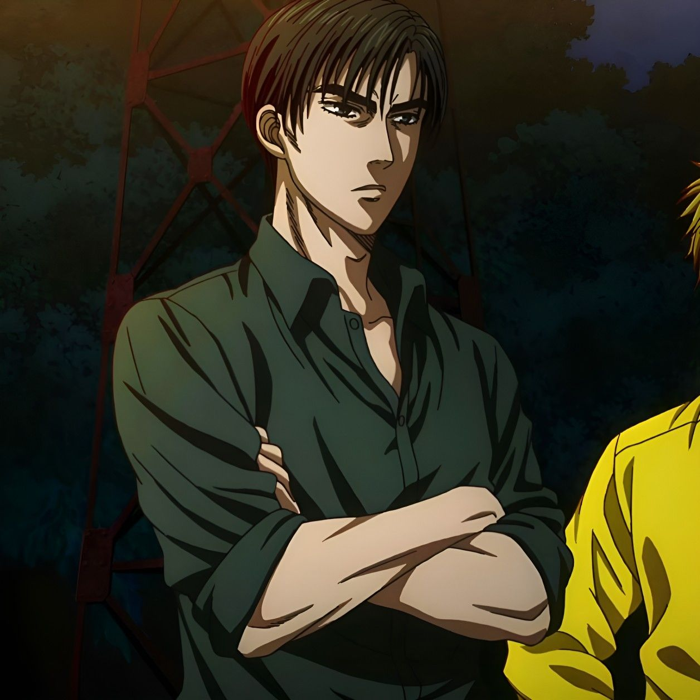
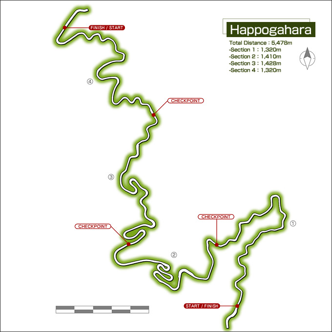

Galeria Project D
Pilotos
Ryosuke Takahashi
Líder do Project D.
Dirige um RX-7 FC.
Keisuke Takahashi
Ás da subida do Project D.
Dirige um RX-7 FD.
Takumi Fujiwara
Ás da decida do Project D.
Dirige um AE86.
Carros
Mazda SAVANNA RX-7 ∞ III (FC3S)
Ano: 1990
Placa: 13-137
Cor: Crystal White
Piloto: Ryosuke Takahashi
Mazda ɛ̃fini RX-7 Type R (FD3S)
Ano: 1991 - 1995
Placa: 63-887
Cor: Competition Yellow Mica
Piloto: Keisuke Takahashi
Toyota Sprinter Trueno GT-APEX (AE86)
Ano: 1983 - 1985
Placa: 13-954
Cor: High-Tech Two Tone
Piloto: Takumi Fujiwara
Circuitos
Akina
Distância Total: 7,552m
Dificuldade: Normal
Akagi
Distância Total: 5,804m
Dificuldade: Normal
Irohazaka
Distância Total: 5,116m
Dificuldade: Difícil
Hakone
Distância Total: 10,764m
Dificuldade: Difícil
Tsuchisaka
Distância Total: 6,712m
Dificuldade: Difícil
Happogahara
Distância Total: 5,478m
Dificuldade: Expert
Tsubaki
Distância Total: 7,312m
Dificuldade: Expert
Nagao
Distância Total: 6,558m
Dificuldade: Expert
Nanamagari
Distância Total: 5,870m
Dificuldade: Expert